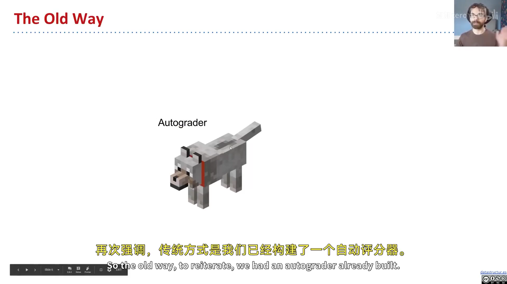
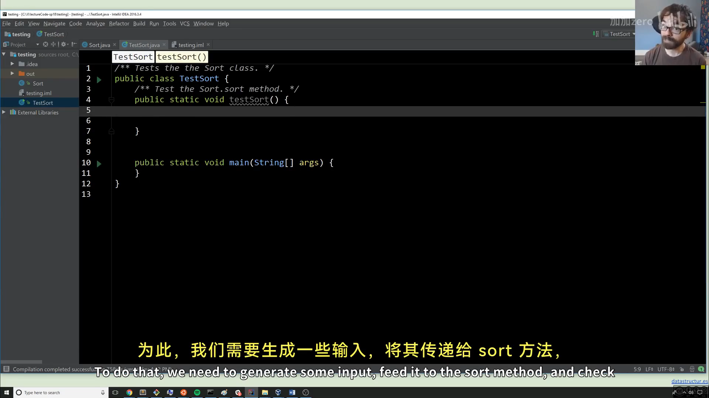
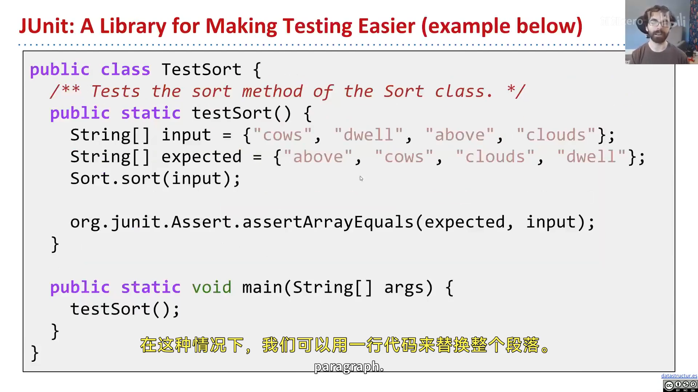
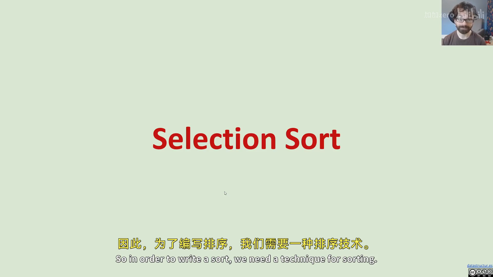
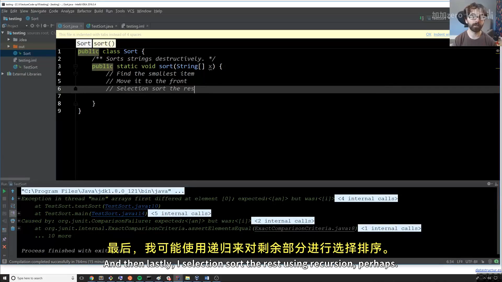
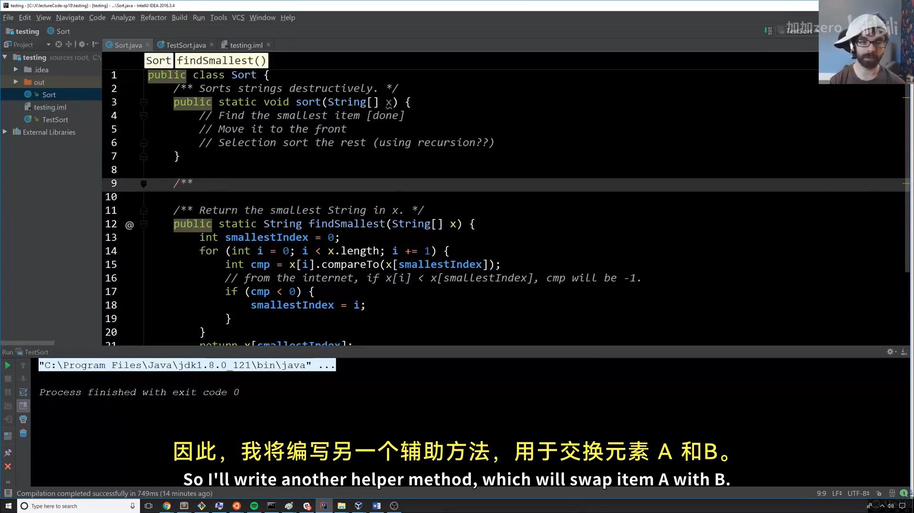
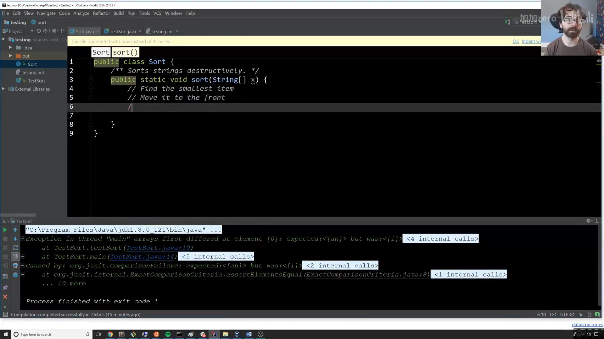

CS61B 第 3 讲：测试与选择排序（Testing）
本电子书信息 - 来源视频：【数据结构与算法 CS61B 2021】伯克利大学—中英字幕 p2 3_Testing - 课程讲义：Hug61B · 3.1 A New Way - 讲义版权：本课程全部材料由 Josh Hug（UC Berkeley CS61B）以 Creative Commons 4.0 BY-NC-SA 许可发布——可自由分享、演绎，但须署名 Josh Hug、以相同许可共享，且不得商用。 - 本书由课堂录像字幕重构而成，术语以官方讲义为准；示意图为官方讲义原图，演示截图取自原视频。
中高级程序员最重要的技能之一，是判断自己的代码是否正确。这一讲我们学习如何自己写测试，并借机实现一个排序算法——选择排序（Selection Sort）。
一、一种新思路：先写测试，再写代码
课堂里，你靠自动评分器（autograder）获得信心；但现实中，测试要你自己写。本讲目标：写一个 Sort 类，提供 sort(String[] x) 方法，就地（破坏性地）排序字符串数组。
全新的思路是：先写 testSort()，之后才动手写真正的排序代码——测试先于实现。

📷 先写测试，再写实现
回到原视频 (00:03:25)
二、Ad Hoc 测试（临时测试）
最简单直接的测试：造一个输入、调用 sort、检查输出对不对，错了就打印第一个不匹配的位置并终止：
public class TestSort {
public static void testSort() {
String[] input = {"i", "have", "an", "egg"};
String[] expected = {"an", "egg", "have", "i"};
Sort.sort(input);
for (int i = 0; i < input.length; i += 1) {
if (!input[i].equals(expected[i])) {
System.out.println("Mismatch in position " + i
+ ", expected: " + expected[i] + ", but got: " + input[i] + ".");
break;
}
}
}
}
配合一个"啥也不做"的 Sort.sort，运行会得到：
Mismatch in position 0, expected: an, but got: i.
能报错是好事——说明测试在工作。你等于给自己造了一个"小游戏"：目标是改代码，让错误消失。很多人对"让测试通过"这件事几乎上瘾。
重要：为什么不用
input == expected直接比数组？因为==比较的是内存盒子里的比特（即地址），而不是数组里的值。所以要用循环逐项比（或用内置的java.util.Arrays.equals）。

📷 Ad Hoc 测试
回到原视频 (00:04:26)
三、JUnit 测试
手写一堆循环和 print 很繁琐。org.junit 库能省掉大量工作：
public static void testSort() {
String[] input = {"i", "have", "an", "egg"};
String[] expected = {"an", "egg", "have", "i"};
Sort.sort(input);
org.junit.Assert.assertArrayEquals(expected, input);
}
一行断言搞定，出错时会告诉我们第一个不同的位置。配合"啥也不做"的 Sort.sort，会得到：
arrays first differed at element [0]; expected:<[an]> but was:<[i]>
虽然输出比 ad hoc 测试难看一点，但写起来简单得多（本章末尾会讲如何让它更好看）。

📷 JUnit 测试
回到原视频 (00:13:40)
四、选择排序（Selection Sort）
最简单的排序算法之一，三步：
- 找到最小的项；
- 把它移到最前面；
- 对剩下的 N-1 项递归地选择排序（不再碰最前面的项）。
以 {6, 3, 7, 2, 8, 1} 为例：最小的 1 与最前的 6 交换，得 {1, 3, 7, 2, 8, 6}；再在剩下部分找最小 2，与 3 交换，得 {1, 2, 7, 3, 8, 6}……依次得到 {1,2,3,7,8,6} → {1,2,3,6,8,7} → {1,2,3,6,7,8}。

📷 选择排序的交换过程
回到原视频 (00:14:28)
编者说明：把最小项移到前面有两种方式——"插入并整体后移"（低效）和"直接交换"（高效）。选择排序用的是后者。
对应到代码，先写几个注释当"路线图"：
public class Sort {
/** Sorts strings destructively. */
public static void sort(String[] x) {
// find the smallest item
// move it to the front
// selection sort the rest (using recursion?)
}
}
五、findSmallest：找最小项
先写 findSmallest 的测试（照例，测试先于实现）：
public static void testFindSmallest() {
String[] input = {"i", "have", "an", "egg"};
String expected = "an";
String actual = Sort.findSmallest(input);
org.junit.Assert.assertEquals(expected, actual);
}
真正实现时有个坑：字符串不能像数字那样用 < 比较。新手可能写出 if (x[i] < smallest)，这会导致编译错误。正确做法是用 compareTo：
public static String findSmallest(String[] x) {
String smallest = x[0];
for (int i = 0; i < x.length; i += 1) {
int cmp = x[i].compareTo(smallest);
if (cmp < 0) { // x[i] 字典序更小
smallest = x[i];
}
}
return smallest;
}
compareTo 返回负数表示"更小"、0 表示相等、正数表示"更大"。注意 Josh 在讲义里用了 @source 标注注明"字符串比较参考了某链接"——这是给正式选课学生的引用规范。

📷 findSmallest 与 compareTo
回到原视频 (00:17:00)
六、swap：交换两个元素
下一步是"交换"操作，同样先写测试再实现：
public static void swap(String[] x, int a, int b) {
String temp = x[a];
x[a] = x[b];
x[b] = temp;
}
用临时变量 temp 中转，这是交换两个变量的经典三步。（Josh 在课上先写了个带 bug 的版本——把 swap 参数错写成了字符串而非索引——测试立刻暴露了问题，这正是"测试先行"的价值。）

📷 swap 的实现与测试
回到原视频 (00:25:08)
七、递归地排序剩余部分
把 findSmallest + swap + 递归组合起来，就得到完整的选择排序：
public static void sort(String[] x) {
sort(x, 0); // 从下标 0 开始排
}
private static void sort(String[] x, int start) {
if (start == x.length) {
return; // 基本情况：排完了
}
int smallestIndex = findSmallestIndex(x, start); // 在 [start, ...] 里找最小
swap(x, start, smallestIndex); // 换到最前
sort(x, start + 1); // 递归排剩下的
}
- 基本情况：
start == x.length，没有可排的了； - 递归情况：把
[start, ...]里的最小项换到start位置，再递归排start+1之后的部分。

📷 递归排序剩余部分
回到原视频 (00:16:56)
附：官方参考与延伸阅读
- 本讲讲义（3.1 A New Way）：https://joshhug.gitbooks.io/hug61b/content/chap3/chap31.html
- 字符串比较参考（compareTo）：https://goo.gl/a7yBU5
- JUnit 官方文档：https://junit.org/junit4/
java.util.Arrays.equals：Oracle 官方文档
版权与许可：本电子书中的课堂讲解内容重构自 Josh Hug（UC Berkeley）CS61B 课程录像；课程全部材料依据 Creative Commons 4.0 BY-NC-SA 许可发布。请在使用时署名 Josh Hug、以相同许可共享，且不得用于商业用途。书中示意图来自官方讲义原图，演示截图取自原视频，相应权利归原作者与视频权利人所有。